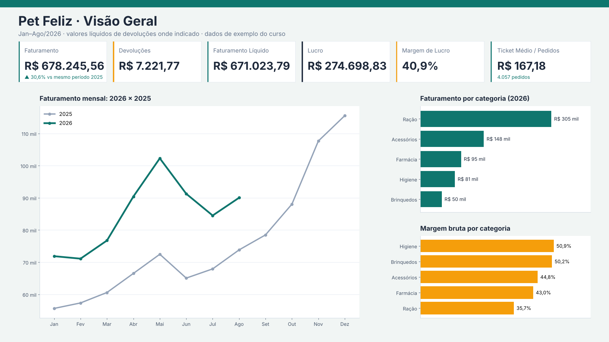
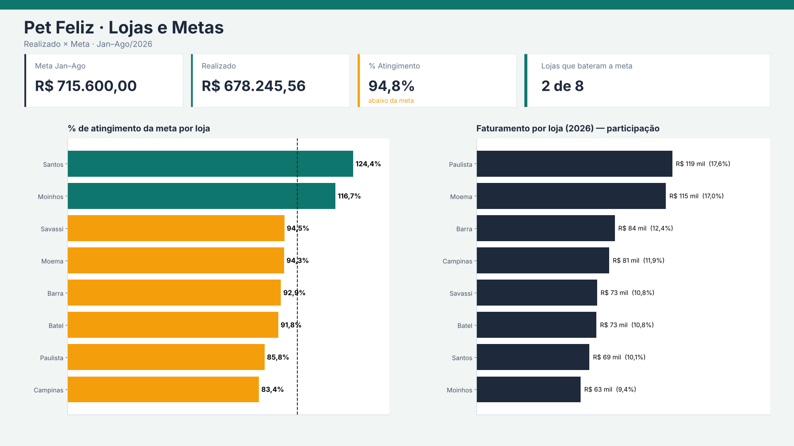
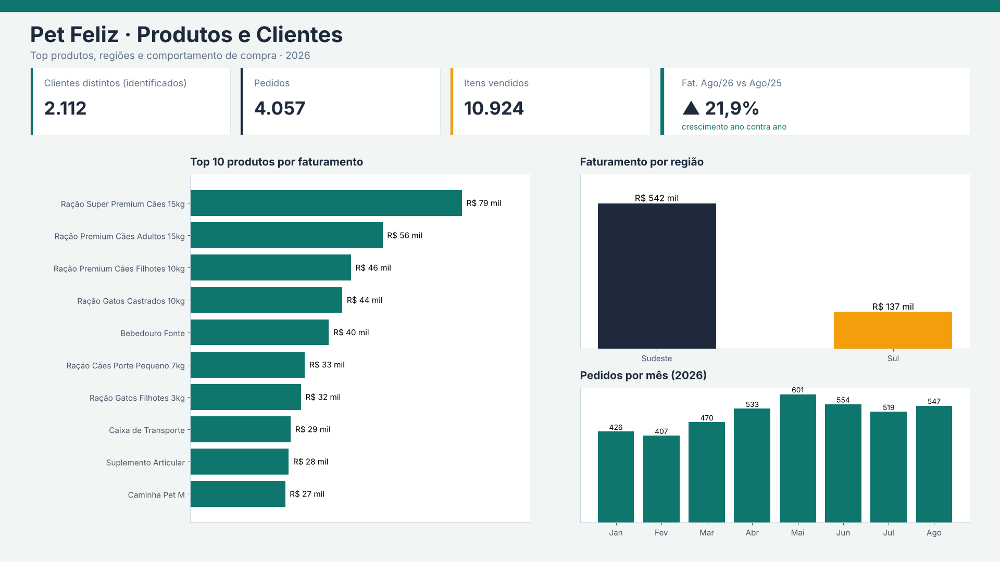

Solução completa do projeto final: consultas M, modelo e relacionamentos, medidas DAX, testes do modelo, especificação do dashboard, números de conferência e os erros mais prováveis dos alunos.
Dados: 20 CSVs mensais de vendas, Lojas.txt, Produtos.xlsx, Clientes.csv, Metas_2026.xlsx, Devolucoes.json, e Vendas_2026_09.csv para o teste de atualização. O gabarito completo, com as 64 conferências, está na planilha Gabarito_Professor_Aula15.xlsx.
Crie primeiro o parâmetro pPasta (texto) com o caminho da pasta, terminando em barra invertida. Depois, uma consulta por tabela (cole no Editor Avançado).
// Parâmetro (Texto). Valor atual: a pasta onde você descompactou o pacote
// Início > Gerenciar Parâmetros > Novo Parâmetro (Nome: pPasta | Tipo: Texto)
"C:\Cursos\PetFeliz\" meta [IsParameterQuery=true, Type="Text", IsParameterQueryRequired=true]let
Fonte = Folder.Files(pPasta & "Vendas"),
SoCsv = Table.SelectRows(Fonte, each Text.Lower([Extension]) = ".csv"),
Lidas = Table.AddColumn(SoCsv, "Dados", each
Table.PromoteHeaders(
Csv.Document([Content], [Delimiter = ";", Encoding = 65001, QuoteStyle = QuoteStyle.None]),
[PromoteAllScalars = true])),
Unidas = Table.Combine(Lidas[Dados]),
Tipos = Table.TransformColumnTypes(Unidas,
{{"IDPedido", Int64.Type}, {"Data", type date}, {"CodLoja", Int64.Type},
{"IDCliente", type text}, {"SKU", type text}, {"Qtd", Int64.Type},
{"PrecoUnit", type number}, {"Desconto", type number}}, "pt-BR"),
ClienteVazio = Table.ReplaceValue(Tipos, "", null, Replacer.ReplaceValue, {"IDCliente"}),
SKUpadrao = Table.TransformColumns(ClienteVazio, {{"SKU", each Text.Upper(Text.Trim(_)), type text}}),
SemDuplicadas = Table.Distinct(SKUpadrao),
SemLojaTeste = Table.SelectRows(SemDuplicadas, each [CodLoja] <> 99)
in
SemLojaTeste| Conferência | Esperado |
|---|---|
| Quantas linhas tem a consulta de Vendas combinada, antes de qualquer limpeza? | 18.218 |
| Quantas linhas DUPLICADAS você removeu das Vendas? | 91 |
| Quantas linhas da loja de teste você removeu? | 240 |
| Quantas linhas finais tem fVendas? | 17.887 |
| Quantas linhas de Vendas estão SEM IDCliente? (não remova, apenas observe) | 2.213 |
let
Fonte = Csv.Document(File.Contents(pPasta & "Lojas.txt"),
[Delimiter = "#(tab)", Encoding = 65001, QuoteStyle = QuoteStyle.None]),
Cabecalho = Table.PromoteHeaders(Fonte, [PromoteAllScalars = true]),
Tipos = Table.TransformColumnTypes(Cabecalho,
{{"CodLoja", Int64.Type}, {"NomeLoja", type text}, {"Cidade", type text}, {"UF", type text},
{"Regiao", type text}, {"Gerente", type text}, {"DataAbertura", type date}}, "en-US"),
SemLojaTeste = Table.SelectRows(Tipos, each [CodLoja] <> 99)
in
SemLojaTeste| Conferência | Esperado |
|---|---|
| Quantas linhas tem a tabela Lojas? | 9 |
let
Fonte = Excel.Workbook(File.Contents(pPasta & "Produtos.xlsx"), null, true),
Aba = Fonte{[Item = "Cadastro", Kind = "Sheet"]}[Data],
SemTitulo = Table.Skip(Aba, 3),
Cabecalho = Table.PromoteHeaders(SemTitulo, [PromoteAllScalars = true]),
Tipos = Table.TransformColumnTypes(Cabecalho,
{{"SKU", type text}, {"Produto", type text}, {"Categoria", type text}, {"Marca", type text},
{"CustoUnit", type number}, {"PrecoLista", type number}}, "en-US"),
SKUpadrao = Table.TransformColumns(Tipos, {{"SKU", each Text.Upper(Text.Trim(_)), type text}})
in
SKUpadrao| Conferência | Esperado |
|---|---|
| Quantas linhas tem a tabela Produtos depois de tratada? | 32 |
let
Fonte = Csv.Document(File.Contents(pPasta & "Clientes.csv"),
[Delimiter = ";", Encoding = 1252, QuoteStyle = QuoteStyle.None]),
Cabecalho = Table.PromoteHeaders(Fonte, [PromoteAllScalars = true]),
Tipos = Table.TransformColumnTypes(Cabecalho,
{{"IDCliente", type text}, {"NomeCliente", type text}, {"Sexo", type text},
{"Cidade", type text}, {"DataCadastro", type date}}, "pt-BR")
in
Tipos| Conferência | Esperado |
|---|---|
| Quantas linhas tem Clientes? | 3.200 |
let
Fonte = Excel.Workbook(File.Contents(pPasta & "Metas_2026.xlsx"), null, true),
Aba = Fonte{[Item = "Metas", Kind = "Sheet"]}[Data],
Cabecalho = Table.PromoteHeaders(Aba, [PromoteAllScalars = true]),
Desdinamizada = Table.UnpivotOtherColumns(Cabecalho, {"CodLoja", "Loja"}, "Mes", "Meta"),
NumeroMes = Table.AddColumn(Desdinamizada, "MesNum", each
List.PositionOf({"Jan","Fev","Mar","Abr","Mai","Jun","Jul","Ago","Set","Out","Nov","Dez"}, [Mes]) + 1, Int64.Type),
ComData = Table.AddColumn(NumeroMes, "Data", each #date(2026, [MesNum], 1), type date),
Tipos = Table.TransformColumnTypes(ComData, {{"CodLoja", Int64.Type}, {"Meta", Int64.Type}, {"Mes", type text}})
in
Tipos| Conferência | Esperado |
|---|---|
| Quantas linhas tem Metas depois do Desdinamizar (8 lojas × 12 meses)? | 96 |
let
Fonte = Json.Document(File.Contents(pPasta & "Devolucoes.json")),
Lista = Fonte[devolucoes],
Tabela = Table.FromList(Lista, Splitter.SplitByNothing(), {"R"}),
Nivel1 = Table.ExpandRecordColumn(Tabela, "R",
{"idDevolucao", "pedido", "dataDevolucao", "loja", "motivo", "itens"}),
Nivel2 = Table.ExpandListColumn(Nivel1, "itens"),
Nivel3 = Table.ExpandRecordColumn(Nivel2, "itens", {"sku", "qtd", "valorReembolsado"}),
Tipos = Table.TransformColumnTypes(Nivel3,
{{"idDevolucao", Int64.Type}, {"pedido", Int64.Type}, {"dataDevolucao", type date}, {"loja", Int64.Type},
{"motivo", type text}, {"sku", type text}, {"qtd", Int64.Type}, {"valorReembolsado", type number}}, "en-US"),
Renomeadas = Table.RenameColumns(Tipos,
{{"idDevolucao", "IDDevolucao"}, {"pedido", "IDPedido"}, {"dataDevolucao", "DataDevolucao"},
{"loja", "Loja"}, {"motivo", "Motivo"}, {"sku", "SKU"}, {"qtd", "Qtd"}, {"valorReembolsado", "ValorReembolsado"}}),
SKUpadrao = Table.TransformColumns(Renomeadas, {{"SKU", each Text.Upper(Text.Trim(_)), type text}})
in
SKUpadrao| Conferência | Esperado |
|---|---|
| Quantas devoluções existem no JSON (uma por registro da lista)? | 244 |
Table.Distinct e antes de qualquer relacionamento. Na ordem inversa, o aluno ainda remove 91 duplicatas, mas 177 linhas ficam sem custo no CMV.Esquema estrela, 9 relacionamentos, todos muitos-para-um, filtro em uma direção (dimensão → fato). Calendário marcado como tabela de datas.
| # | Fato (lado *) | Dimensão (lado 1) |
|---|---|---|
| 1 | fVendas[Data] | dCalendario[Data] |
| 2 | fVendas[CodLoja] | dLojas[CodLoja] |
| 3 | fVendas[SKU] | dProdutos[SKU] |
| 4 | fVendas[IDCliente] | dClientes[IDCliente] |
| 5 | fDevolucoes[DataDevolucao] | dCalendario[Data] |
| 6 | fDevolucoes[Loja] | dLojas[CodLoja] |
| 7 | fDevolucoes[SKU] | dProdutos[SKU] |
| 8 | fMetas[Data] | dCalendario[Data] |
| 9 | fMetas[CodLoja] | dLojas[CodLoja] |
Por que nada liga fVendas a fDevolucoes? Duas fatos nunca se ligam entre si. Elas conversam pelas dimensões compartilhadas (calendário, lojas, produtos). Por isso uma segmentação de loja filtra vendas, devoluções e metas ao mesmo tempo. Por que fMetas não liga a dProdutos? A meta é por loja e mês; não existe meta por produto.
dCalendario =
SELECTCOLUMNS (
CALENDAR ( DATE ( 2025, 1, 1 ), DATE ( 2026, 12, 31 ) ),
"Data", [Date],
"Ano", YEAR ( [Date] ),
"MesNum", MONTH ( [Date] ),
"Mes", FORMAT ( [Date], "mmm", "pt-BR" ),
"AnoMes", FORMAT ( [Date], "yyyy-mm" ),
"Trimestre", "T" & ROUNDUP ( MONTH ( [Date] ) / 3, 0 )
)
// Depois: Ferramentas de Tabela > Marcar como tabela de datas > coluna Data
// Classificar "Mes" por "MesNum"O aluno prova os relacionamentos em três rodadas. Os valores abaixo são o que ele deve ver.
| ID | O que o aluno faz | Esperado |
|---|---|---|
| r1 | Tabela com dLojas[NomeLoja] + Soma de fVendas[Qtd]: quantas linhas aparecem (sem contar o total) e NENHUMA é “(Em branco)”? | 8 |
| r2 | Mesma tabela: quantos itens vendeu a loja Pet Feliz Paulista (todos os anos)? | 4.656 |
| r3 | Tabela com dProdutos[Categoria] + Soma de fVendas[Qtd]: quantos itens da categoria Ração? | 8.648 |
| r4 | Tabela com dCalendario[Ano] + Soma de fVendas[Qtd]: quantos itens em 2026? | 10.924 |
| r5 | Tabela com dClientes[Sexo] + Soma de fVendas[Qtd]: quantos itens aparecem na linha “(Em branco)”? (são as vendas sem cliente identificado) | 3.153 |
| r6 | Troque para a tabela dLojas[NomeLoja] + Soma de fDevolucoes[ValorReembolsado]: total devolvido pela Pet Feliz Barra (todos os anos) | R$ 2.880,18 |
| r7 | dProdutos[Categoria] + Soma de fDevolucoes[ValorReembolsado]: total devolvido da categoria Ração | R$ 7.889,01 |
| r8 | dCalendario[Ano] + Soma de fDevolucoes[ValorReembolsado]: total devolvido em 2025 | R$ 8.964,57 |
| r9 | dLojas[NomeLoja] + Soma de fMetas[Meta]: meta de 2026 (ano cheio) da Pet Feliz Santos | R$ 97.500,00 |
| r10 | dProdutos[Categoria] + Soma de fMetas[Meta]: qual valor aparece em CADA categoria? (se o modelo está certo, é o total da meta de 2026, repetido, porque a meta não tem relação com produto) | R$ 1.221.000,00 |
| Medida | Fórmula | Esperado |
|---|---|---|
| Teste Órfãos Produto (vendas) | COUNTROWS ( FILTER ( fVendas, ISBLANK ( RELATED ( dProdutos[SKU] ) ) ) ) | 0 |
| Teste Órfãos Loja (vendas) | COUNTROWS ( FILTER ( fVendas, ISBLANK ( RELATED ( dLojas[CodLoja] ) ) ) ) | 0 |
| Teste Vendas sem Cliente | COUNTROWS ( FILTER ( fVendas, ISBLANK ( RELATED ( dClientes[IDCliente] ) ) ) ) | 2.213 (é esperado) |
| Teste Órfãos Produto (devoluções) | COUNTROWS ( FILTER ( fDevolucoes, ISBLANK ( RELATED ( dProdutos[SKU] ) ) ) ) | 0 |
| Teste Órfãos Loja (metas) | COUNTROWS ( FILTER ( fMetas, ISBLANK ( RELATED ( dLojas[CodLoja] ) ) ) ) | 0 |
| Teste Chave Duplicada Lojas | COUNTROWS ( dLojas ) - DISTINCTCOUNT ( dLojas[CodLoja] ) | 0 |
| Teste Chave Duplicada Produtos | COUNTROWS ( dProdutos ) - DISTINCTCOUNT ( dProdutos[SKU] ) | 0 |
| Teste Chave Duplicada Clientes | COUNTROWS ( dClientes ) - DISTINCTCOUNT ( dClientes[IDCliente] ) | 0 |
| ID | O que o aluno faz | Esperado |
|---|---|---|
| r17 | Segmentações: Loja = Pet Feliz Santos e Ano = 2026. Faturamento? | R$ 68.812,92 |
| r18 | Mesma seleção: Devoluções? | R$ 328,31 |
| r19 | Mesma seleção: Meta (ano cheio 2026 da loja)? | R$ 97.500,00 |
| r20 | Acrescente Categoria = Ração: Faturamento de Santos × Ração em 2026? | R$ 29.058,85 |
| r21 | Mesma seleção (Santos × Ração × 2026): Devoluções? | R$ 219,70 |
| r22 | Mesma seleção: a Meta continua igual à de r19? Digite o valor que aparece (a meta não é filtrada por produto) | R$ 97.500,00 |
| r23 | Com Loja = Pet Feliz Santos selecionada, quantas categorias continuam aparecendo na segmentação de Categoria? (filtro NÃO deve “subir” de volta às dimensões) | 5 |
| r24 | Cartão Devoluções com Ano = 2026 e Mês = Mai: valor? (prova o relacionamento fDevolucoes → dCalendario) | R$ 837,65 |
| O que o aluno viu | Causa provável | Correção |
|---|---|---|
| Aparece “(Em branco)” na tabela de lojas ou de produtos | Existe código na fato que não existe na dimensão (loja 99 de teste não removida, SKU com espaço/minúsculo) | Voltar ao Power Query: remover a loja 99 e padronizar o SKU (Cortar + MAIÚSCULAS) em fVendas, dProdutos e fDevolucoes |
| A soma por dimensão não fecha com o total | Linha da fato sem par na dimensão, ou relacionamento com direção/cardinalidade errada | Conferir no Modelo: seta 1 → * partindo da dimensão para a fato; chave única na dimensão |
| O valor se repete igual em todas as linhas (ex.: devolução igual para todas as lojas) | Não há relacionamento entre a dimensão e essa fato | Criar o relacionamento que falta (por exemplo, fDevolucoes[Loja] → dLojas[CodLoja]) |
| Datas fora do calendário / Ano em branco | dCalendario não cobre todo o período, ou o relacionamento está com coluna de data errada | Calendário de 01/01/2025 a 31/12/2026 e relacionamento por Data (não por Ano ou Mês) |
| Não consegue criar o relacionamento “1 para muitos”; vira muitos-para-muitos | A chave da dimensão tem valores repetidos (duplicatas, espaços) | Remover duplicatas e padronizar a chave na dimensão |
| Meta muda quando filtra por categoria de produto | Relacionamento indevido entre fMetas e dProdutos (ou filtro bidirecional) | Remover; meta só se relaciona com dLojas e dCalendario |
Referências por dimensão (todos os anos, vendas): Pet Feliz Paulista: R$ 291.017,53; Pet Feliz Moema: R$ 269.669,76; Pet Feliz Barra: R$ 212.833,13; Pet Feliz Campinas: R$ 196.450,69; Pet Feliz Savassi: R$ 177.692,58; Pet Feliz Batel: R$ 174.215,26; Pet Feliz Santos: R$ 155.918,63; Pet Feliz Moinhos: R$ 109.584,96.
Faturamento = SUMX ( fVendas, fVendas[Qtd] * fVendas[PrecoUnit] * ( 1 - fVendas[Desconto] ) )
Devoluções = SUM ( fDevolucoes[ValorReembolsado] )
Faturamento Líquido = [Faturamento] - [Devoluções]
CMV = SUMX ( fVendas, fVendas[Qtd] * RELATED ( dProdutos[CustoUnit] ) )
Lucro = [Faturamento Líquido] - [CMV]
Margem de Lucro = DIVIDE ( [Lucro], [Faturamento Líquido] )
Margem Bruta % = DIVIDE ( [Faturamento] - [CMV], [Faturamento] )
Pedidos = DISTINCTCOUNT ( fVendas[IDPedido] )
Ticket Médio = DIVIDE ( [Faturamento], [Pedidos] )
Itens Vendidos = SUM ( fVendas[Qtd] )
Clientes Ativos = CALCULATE ( DISTINCTCOUNT ( fVendas[IDCliente] ), NOT ISBLANK ( fVendas[IDCliente] ) )
Fat. Ano Anterior = CALCULATE ( [Faturamento], SAMEPERIODLASTYEAR ( dCalendario[Data] ) )
Crescimento % = DIVIDE ( [Faturamento] - [Fat. Ano Anterior], [Fat. Ano Anterior] )
Fat. Acumulado no Ano = TOTALYTD ( [Faturamento], dCalendario[Data] )
Fat. Acumulado Ano Anterior = CALCULATE ( [Fat. Acumulado no Ano], SAMEPERIODLASTYEAR ( dCalendario[Data] ) )
Crescimento Acumulado % = DIVIDE ( [Fat. Acumulado no Ano] - [Fat. Acumulado Ano Anterior], [Fat. Acumulado Ano Anterior] )
Melhor Mês (R$) = MAXX ( ALL ( dCalendario[AnoMes] ), [Faturamento] )
Meta = SUM ( fMetas[Meta] )
% Atingimento = DIVIDE ( [Faturamento], [Meta] )
Lojas Acima da Meta = COUNTROWS ( FILTER ( VALUES ( dLojas[NomeLoja] ), [% Atingimento] >= 1 ) )
Ranking Loja = RANKX ( ALLSELECTED ( dLojas[NomeLoja] ), [Faturamento], , DESC, DENSE )| Ficha | Medida(s) | Conferências e resultado |
|---|---|---|
| A1 | [Faturamento] | Faturamento total, todos os anos (sem filtro) → R$ 1.587.382,54 Faturamento de 2026 (segmentação Ano = 2026) → R$ 678.245,56 |
| A2 | [Devoluções e Faturamento Líquido] | Devoluções de 2026 → R$ 7.221,77 Faturamento Líquido de 2026 → R$ 671.023,79 |
| A3 | [CMV, Lucro e Margem de Lucro] | CMV de 2026 → R$ 396.324,96 Lucro de 2026 → R$ 274.698,83 Margem de Lucro de 2026 (em %) → 40,94% |
| A4 | [Pedidos e Ticket Médio] | Pedidos em 2026 → 4.057 Ticket médio em 2026 → R$ 167,18 |
| A5 | [Clientes Ativos (a pegadinha)] | Clientes ativos em 2026 → 2.112 |
| A6 | [Itens Vendidos] | Itens vendidos em 2026 → 10.924 |
| B1 | [Fat. Ano Anterior e Crescimento %] | Com Ano = 2026 e Mês = Ago: Fat. Ano Anterior (agosto/2025) → R$ 73.826,49 Crescimento % de agosto/26 sobre agosto/25 → 21,95% |
| B2 | [Acumulado no Ano (YTD)] | Acumulado com Ano = 2026 e Mês = Ago → R$ 678.245,56 Crescimento do acumulado Jan–Ago/26 sobre Jan–Ago/25 (%) → 30,59% |
| B3 | [Melhor mês da história] | Faturamento do melhor mês (todos os anos) → R$ 115.544,02 |
| C1 | [Meta e % de Atingimento] | Meta de Jan a Ago/2026, todas as lojas → R$ 715.600,00 % de atingimento Jan–Ago/2026 → 94,78% |
| C2 | [Lojas Acima da Meta] | Número de lojas que bateram a meta → 2 Atingimento da melhor loja (%) → 124,44% |
| D1 | [Descobertas (sem dica)] | D1 · Faturamento da loja líder em 2026 → R$ 119.213,16 D2 · Faturamento da categoria líder em 2026 → R$ 304.683,71 D2 · Margem bruta da categoria com maior margem (%) → 50,87% D3 · Faturamento do produto nº 1 em 2026 → R$ 78.513,10 D4 · Posição da Pet Feliz Barra no ranking de faturamento 2026 → 3 |
Mapa de campos de cada visual. O tema (PetFeliz_tema.json) define as cores.
| Página | Visual | Campos |
|---|---|---|
| 1 Visão Geral | 6 Cartões | [Faturamento], [Devoluções], [Faturamento Líquido], [Lucro], [Margem de Lucro], [Ticket Médio] (+ [Pedidos] como legenda) |
| 1 | Linhas: 2026 × 2025 | Eixo X dCalendario[Mes] (classificado por MesNum) · Legenda dCalendario[Ano] · Y [Faturamento] |
| 1 | Barras por categoria | Eixo dProdutos[Categoria] · [Faturamento] |
| 1 | Barras margem bruta | Eixo dProdutos[Categoria] · [Margem Bruta %] |
| 2 Lojas e Metas | 4 Cartões | [Meta], [Faturamento], [% Atingimento], [Lojas Acima da Meta] (Ano 2026, Jan–Ago) |
| 2 | Barras % atingimento | Eixo dLojas[NomeLoja] · [% Atingimento] · cor condicional (≥1 verde; <1 laranja) · linha constante 100% |
| 2 | Barras faturamento por loja | Eixo dLojas[NomeLoja] · [Faturamento] · rótulo com % do total |
| 3 Produtos e Clientes | 4 Cartões | [Clientes Ativos], [Pedidos], [Itens Vendidos], [Crescimento %] (Ago/26) |
| 3 | Top 10 produtos | Eixo dProdutos[Produto] · [Faturamento] · filtro Top N = 10 |
| 3 | Faturamento por região | Eixo dLojas[Regiao] · [Faturamento] |
| 3 | Pedidos por mês | Eixo dCalendario[Mes] · [Pedidos] |
| Todas | Segmentações sincronizadas | dCalendario[Ano], dCalendario[Mes], dLojas[NomeLoja] |
| Loja | Faturamento | Líquido | Lucro | Margem | Meta Jan–Ago | Atingimento | Rank |
|---|---|---|---|---|---|---|---|
| Pet Feliz Paulista | R$ 119.213,16 | R$ 117.754,08 | R$ 47.675,72 | 40,49% | R$ 138.900,00 | 85,83% | 1 |
| Pet Feliz Moema | R$ 115.278,56 | R$ 113.825,08 | R$ 46.509,69 | 40,86% | R$ 122.200,00 | 94,34% | 2 |
| Pet Feliz Barra | R$ 84.203,31 | R$ 83.081,71 | R$ 34.143,20 | 41,10% | R$ 90.600,00 | 92,94% | 3 |
| Pet Feliz Campinas | R$ 80.794,58 | R$ 80.022,87 | R$ 32.781,44 | 40,97% | R$ 96.900,00 | 83,38% | 4 |
| Pet Feliz Savassi | R$ 73.406,80 | R$ 72.722,11 | R$ 30.089,26 | 41,38% | R$ 77.700,00 | 94,47% | 5 |
| Pet Feliz Batel | R$ 73.073,71 | R$ 72.185,04 | R$ 29.454,12 | 40,80% | R$ 79.600,00 | 91,80% | 6 |
| Pet Feliz Santos | R$ 68.812,92 | R$ 68.484,61 | R$ 28.564,81 | 41,71% | R$ 55.300,00 | 124,44% | 7 |
| Pet Feliz Moinhos | R$ 63.462,51 | R$ 62.948,28 | R$ 25.480,58 | 40,48% | R$ 54.400,00 | 116,66% | 8 |
| Categoria | Faturamento | Margem bruta |
|---|---|---|
| Ração | R$ 304.683,71 | 35,68% |
| Acessórios | R$ 147.813,29 | 44,75% |
| Farmácia | R$ 94.984,75 | 43,04% |
| Higiene | R$ 80.661,11 | 50,87% |
| Brinquedos | R$ 50.102,69 | 50,19% |



Copiar Novos_Dados\Vendas_2026_09.csv para a pasta Vendas\ e atualizar, sem editar nenhuma consulta. O arquivo de setembro traz as mesmas pegadinhas (duplicatas, loja 99, SKU sujo).
| Conferência | Esperado |
|---|---|
| Faturamento de Setembro/2026 depois de atualizar | R$ 88.541,17 |
| Faturamento total (todos os anos) depois de atualizar | R$ 1.675.923,71 |
| Erro | O aluno verá |
|---|---|
| Não removeu as duplicatas | Linhas 17.977; faturamento total R$ 1.595.500,02 |
| Não removeu a loja 99 | Linhas 18.127; faturamento total R$ 1.605.810,54 |
| Nenhum dos dois | Faturamento total R$ 1.614.067,92 |
| Não padronizou o SKU | 177 linhas sem custo; CMV 2026 R$ 392.434,65 (certo R$ 396.324,96) |
| DISTINCTCOUNT sem excluir vazio | Clientes 2026: 2.113 (certo 2.112) |
| Esqueceu o desconto | Faturamento 2026 R$ 687.793,01 |
| Ticket por linha, não por pedido | Ticket 2026 R$ 89,31 |
| Meta de 2026 sem limitar a Jan–Ago | Meta R$ 1.221.000,00; atingimento 55,55% |
| fMetas ligada a dProdutos | Meta diferente em cada categoria (teste r10) |
| Falta fDevolucoes → dLojas | Devolução idêntica em todas as lojas (teste r6) |
| Critério | Pontos | Como verificar |
|---|---|---|
| Importação com conectores certos (pasta de vendas) | 15 | Consulta fVendas usa Folder.Files; 6 fontes presentes |
| Tratamento: números das Etapas 1–2 | 15 | c1 a c10 |
| Modelo estrela: 9 relacionamentos, calendário marcado | 15 | c11, c12 e testes r1 a r16 |
| DAX: fichas A a D e testes finais | 25 | d1 a d24 e r17 a r24 |
| Dashboard: 3 páginas, clareza, consistência, interatividade | 20 | Comparar com as imagens e o mapa de campos |
| Atualização sem editar nada | 10 | f1 e f2 |
| Bônus: drill-through, tooltip, parâmetro de campo, bookmarks | +10 | Abrir o arquivo |